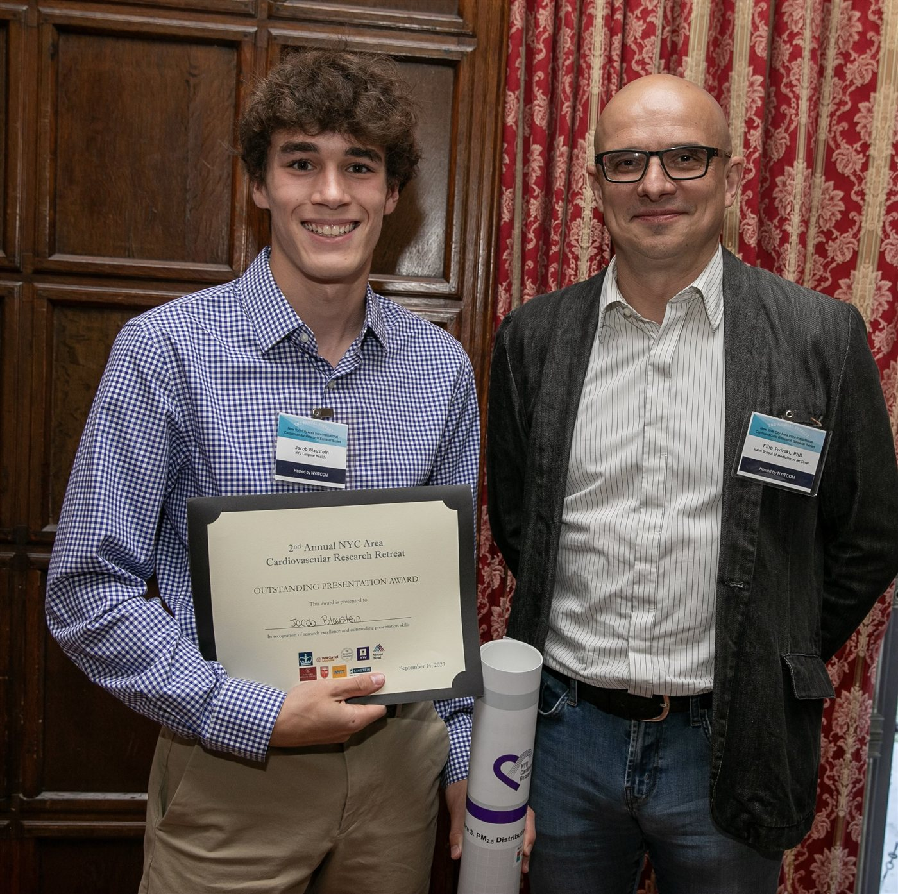
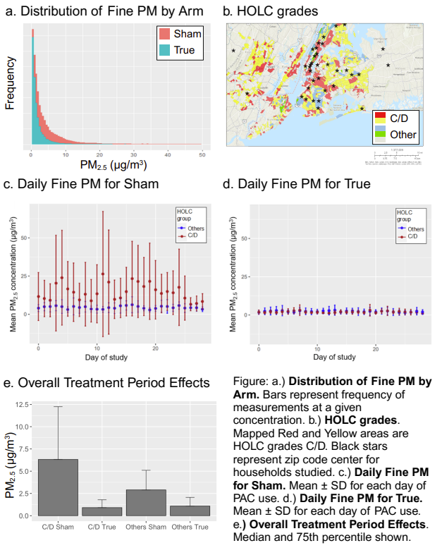

Nov 2022 – June 2024 · New York, NY
NYU Langone Health
Research on how historical redlining in New York City relates to particulate air pollution and to cardiovascular health disparities.
- Role
- Research Assistant
- Output
- 2 first-author papers, 3 national conferences
- Tools
- R / RStudio, mixed-effects models, data visualization
The study
- The question: in the 1930s, the federal Home Owners’ Loan Corporation graded neighborhoods from A to D, a practice now known as redlining. Formerly redlined areas are known to have worse outdoor air. We asked whether that carries indoors, where people spend about 90% of their time, and whether air purifiers can close the gap.
- The trial: a randomized, double-blind, sham-controlled trial in the homes of 44 New York City area adults with hypertension. Each home got either a real HEPA portable air cleaner or a sham one for four weeks, while a monitor in the same room logged fine particulate matter (PM2.5) every two minutes.
- My role: as first author, I helped conceive the analysis, worked through 600,000+ rows of air quality data in R using linear mixed-effects models, made the figures, and wrote the original draft.
What we found
- Homes in formerly redlined neighborhoods had worse indoor air. Mean indoor PM2.5 was 8.48 µg/m³ in grade C/D neighborhoods versus 3.12 µg/m³ elsewhere (p = 0.041).
- Air cleaners cut indoor pollution, most where it was worst. Real HEPA cleaners lowered PM2.5 compared with sham units (p = 0.003), with a significantly larger drop in formerly redlined neighborhoods (p = 0.027). With filtration running, the two groups became nearly identical.
- Presentations: I presented this work at 3 national conferences and received the Outstanding Presentation Award at the 2nd Annual NYC Area Cardiovascular Research Retreat (2023).
Publications
- Residences in Historically Redlined Districts in New York City Area Have More Indoor Particulate Air Pollution Potentially Reducible by Portable Air Cleaners
Blaustein JR, Moon HA, Long C, Bonanni LJ, Gordon T, Thorpe LE, Newman JD, Wittkopp S. Circulation Research. 2024;135(1):e1–e3. - Environmental Impacts on Cardiovascular Health and Biology: An Overview
Blaustein JR, Quisel MJ, Hamburg NM, Wittkopp S. Circulation Research. 2024;134(9):1048–1060.
A review of how air and noise pollution, light at night, and climate-related hazards affect the heart and blood vessels, the biological pathways involved, and strategies to reduce exposure.

